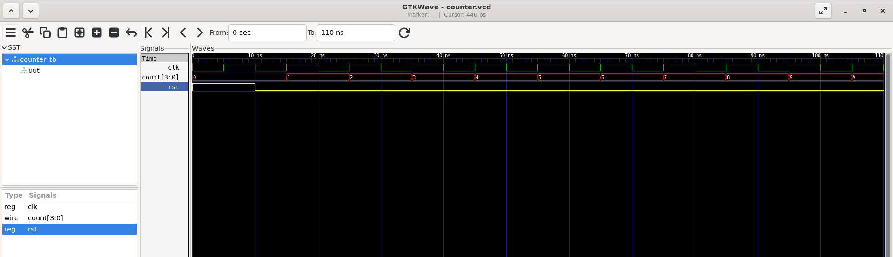

ASIC Design via LibreLane
Designing My First ASIC: From a Counter to Silicon

Introduction
When I first started learning about chip design, I wanted to understand what actually happens between writing a piece of code and producing a physical computer chip. I had worked with microcontrollers and computers before, but I had never designed the hardware itself. To start learning, I built something deceptively simple: a four-bit digital counter.
The Counter
A counter is one of the simplest examples of digital logic. Its job is exactly what its name suggests: every time it receives a clock signal, it increases its stored number by one. Starting from zero, it might count: 0000 → 0001 → 0010 → 0011 → 0100 → 0101 → … Four binary digits allow the counter to represent numbers from 0 through 15.
From Code to Hardware
I designed the counter using a hardware description language called Verilog. Verilog looks somewhat like a programming language, but its purpose is different. When I write a normal program, I am giving a computer a sequence of instructions to execute. With Verilog, I am describing the electronic components and connections that should exist inside a chip.
Simulating the Design
Before attempting to manufacture anything, I needed to make sure my design actually worked. I created a testbench, which is essentially a controlled experiment for digital hardware. The testbench provides inputs to the design and observes its outputs. I could reset the counter and then provide clock pulses to verify that it progressed through the expected binary sequence.

Turning Logic Into Physical Components
Once the counter behaved correctly in simulation, I used an open-source ASIC design flow called LibreLane. The first major step was synthesis. Synthesis takes my high-level description of the counter and determines how to implement it using actual electronic building blocks from the SkyWater 130 nm process. The result is a description much closer to the hardware that will actually be manufactured.
Timing the Circuit
After synthesis, the design needs to be checked to make sure the circuit can operate fast enough. This process is called static timing analysis, or STA. Digital circuits operate according to a clock. If one circuit produces a result and another circuit needs to store that result, the signal must travel through the intervening logic quickly enough to arrive before the next clock edge. My counter had substantial timing margin, meaning the circuit was capable of operating faster than the clock period I specified.
Designing the Physical Chip
After synthesis and timing analysis, the design moves into physical design. Floorplanning determines the general physical dimensions of the chip and where its major structures will go. Placement positions the individual standard cells. Clock-tree synthesis creates a network that distributes the clock signal throughout the circuit. Finally, routing connects the individual components with physical wires.
From Layout to a Chip
The final result of this process is a file called a GDS, which contains the geometric information needed to manufacture the chip. I was able to take my counter all the way through this process. The accompanying KLayout image shows the resulting physical layout. The colored geometric shapes are not a picture of a computer program; they are the physical representation of the electronic circuit I designed.
What I Learned
The counter itself is extremely simple. It is nowhere near the complexity of a modern processor, and by itself it isn't a particularly useful computer. That wasn't really the point. The purpose of the project was to follow a digital design through the entire ASIC process: from an idea, to a hardware description, to simulation, to synthesized logic, to physical placement and routing, and finally to a manufacturing-ready layout.
Looking Forward
The project gave me my first understanding of what happens inside an ASIC before it ever becomes silicon. More importantly, it changed how I think about computers. A processor isn't fundamentally a mysterious box that executes code. At the lowest level, it is an enormous collection of extremely small physical circuits—circuits that store information, perform logical operations, move signals, and coordinate everything according to a clock. My four-bit counter was my first opportunity to build one of those circuits myself.
That foundation led to OpenLaneAI: the same LibreLane / sky130 path, but with English prompts, AI-generated RTL, and automated quality gates so a layout is only accepted when simulation, synthesis, DRC, LVS, and timing all pass. Longer term, I still want to build something much more ambitious—a 32-bit RISC-V system-on-chip as the foundation for a custom guitar-effects processor.